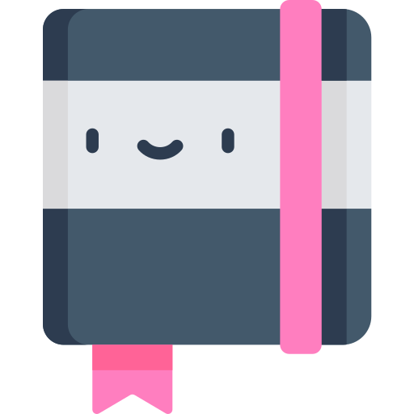
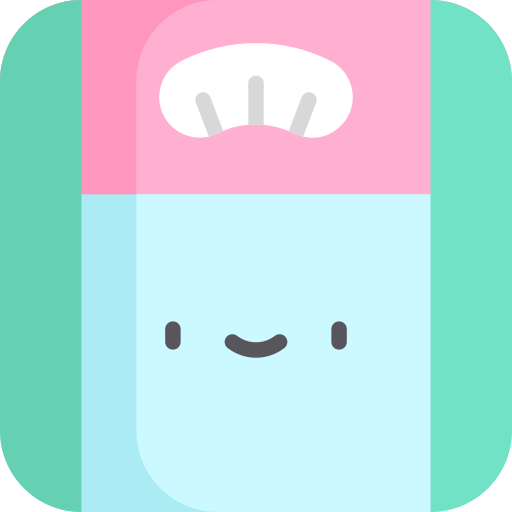
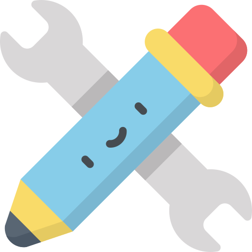

<ion-tabs #tabs (ionTabsDidChange)="getSelectedTab()">
  <ion-tab-bar slot="bottom">
    <ion-tab-button
      tab="food-diary"
      id="food-diary"
      [class.grayscale]="activeTab != 'food-diary'"
    >
      
      <ion-label>Food diary</ion-label>
    </ion-tab-button>

    <ion-tab-button
      tab="weight-tracker"
      id="weight-tracker"
      [class.grayscale]="activeTab != 'weight-tracker'"
    >
      
      <ion-label>Weight tracker</ion-label>
    </ion-tab-button>

    <ion-tab-button
      tab="settings"
      id="settings"
      [class.grayscale]="activeTab != 'settings'"
    >
      
      <ion-label>Settings</ion-label>
    </ion-tab-button>
  </ion-tab-bar>
</ion-tabs>
